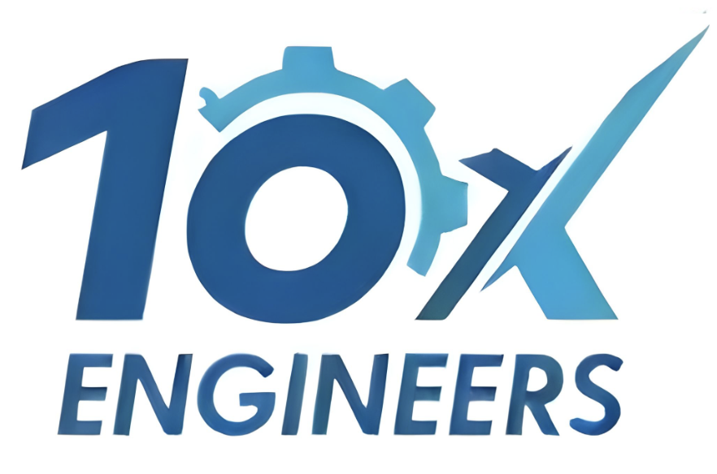
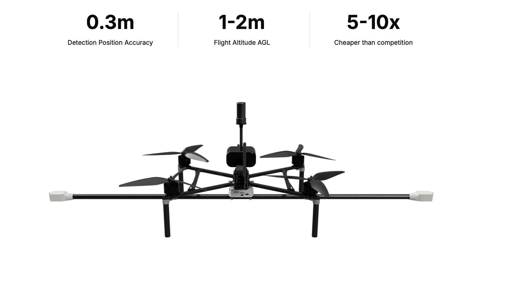
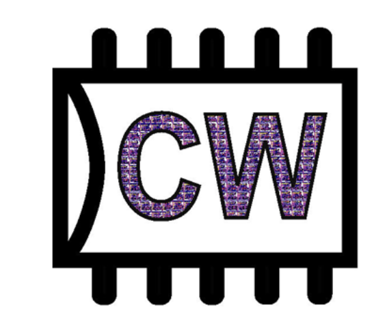

Microprocessor Systems Lab Portfolio
E155 Coursework
Browse the full collection of FPGA, microcontroller, and embedded-systems labs.
View All Labs
I am a first-year M.S. student in Electrical and Computer Engineering at Georgia Tech. I graduated from Harvey Mudd College in May 2026 with a B.S. in General Engineering and an ECE specialization. As a Clay-Wolkin Fellow in Harvey Mudd’s VLSI Lab, I helped develop an open-source RISC-V architectural verification suite that became RISC-V International’s official v4.0 Unprivileged Certification Test Suite, recognized by the 2026 TCMM Open Source Hardware Contribution Award. My work spans computer architecture, hardware verification, and analog design. I am always excited to learn, build, and connect with other engineers.

Georgia Institute of Technology, Atlanta, GA
M.S. Electrical and Computer Engineering, Expected May 2028
Harvey Mudd College, Claremont, CA
B.S. General Engineering, ECE specialization, May 2026
GPA: 3.73/4.00; Minor: Environmental Analysis
Tau Beta Pi Engineering Honor Society
Analog: Xschem, Magic, LTspice, Synopsys, COMSOL, MATLAB
Programming: SystemVerilog, C, RISC-V Assembly, C++, Python, Java, Modelica
Verification: Questa Intel, Quartus Prime, ImperasDV, RISCOF, SAIL, Spike, GCC, Git
Hardware: CORE-V Wally, STM32, iCE40 FPGA, Arduino, Teensy, SiFive FE310, DE0-CV
Fabrication: 3D printing, laser cutting, welding, waterjet, lathe, mill, SolidWorks
Languages: English (C1), German (B2), Spanish and Catalan (native)
Aug 2025 – May 2026 | Claremont, CA

Jan 2025 – May 2025 | Claremont, CA

Jun 2024 – Aug 2025 | Claremont, CA
May 2023 – Jun 2023 | San Diego, CA
E155 Coursework
Browse the full collection of FPGA, microcontroller, and embedded-systems labs.
View All LabsDec 2025
Built an STM32/iCE40 gesture instrument with two BNO055 IMUs, 400 kHz I²C, SPI sound-ID transfer, WAV decoding, and 12-bit DAC playback.
View ProjectNov 2024
Designed and verified a multicycle RISC-V processor in SystemVerilog with unified memory and custom control logic; passed the Intel Quartus test suite.
View ProjectOct 2026
Designed and laid out a compensated two-stage GF180 CMOS op-amp; verified post-layout feedback, transient, and noise performance and passed DRC/LVS.
Apr 2026
Designed, built, and characterized a five-stage discrete BJT op-amp; validated open- and closed-loop behavior against analysis and simulation.
Dec 2024
Built a direct-downconversion/direct-sampling receiver with Mini-Circuits modules and compared theoretical and measured signal, noise, and distortion.
View ProjectMay 2025
Designed an IEEE 754 half-precision FMA in Verilog for graphics; passed Verilator lint and baseline functional tests.
Jan 2024 – May 2024
Led hardware development of an autonomous underwater vehicle with Teensy 4.1 sensor integration and proportional autonomous navigation.
View Project2024 – 2025
Constructed a two-seat Van’s RV-12 with a 100 hp Rotax engine and Garmin VFR avionics.
View Project
Nov 2024 – Feb 2026
Email: marina.bellido25@gmail.com
Phone: +1 840-999-0466
LinkedIn: linkedin.com/in/marina-bellido-hmc
GitHub: github.com/Marina-Bellido